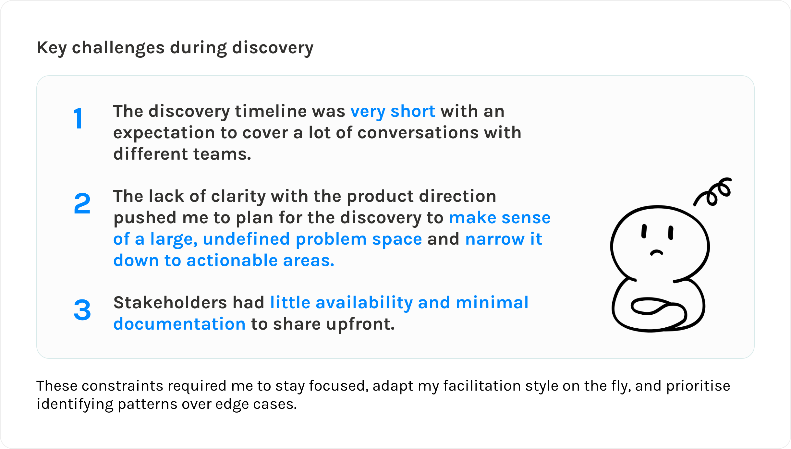
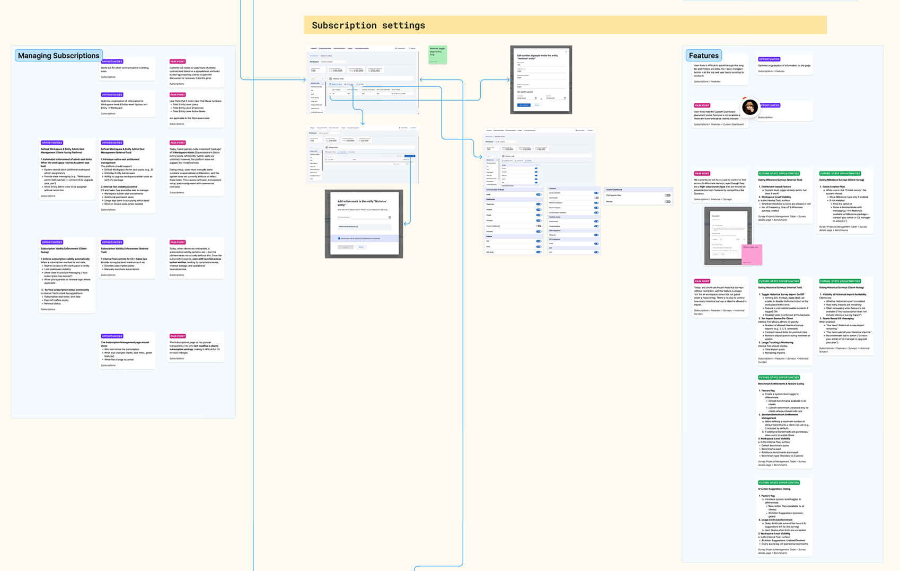
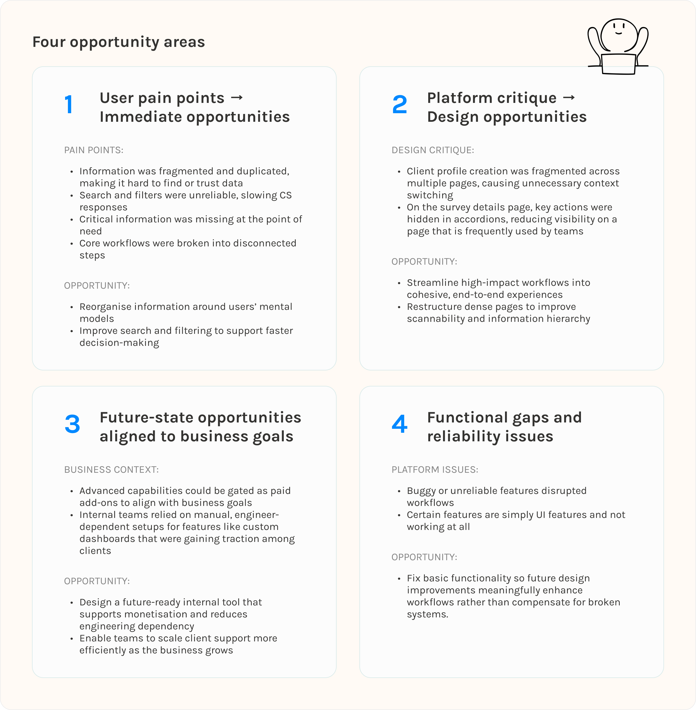
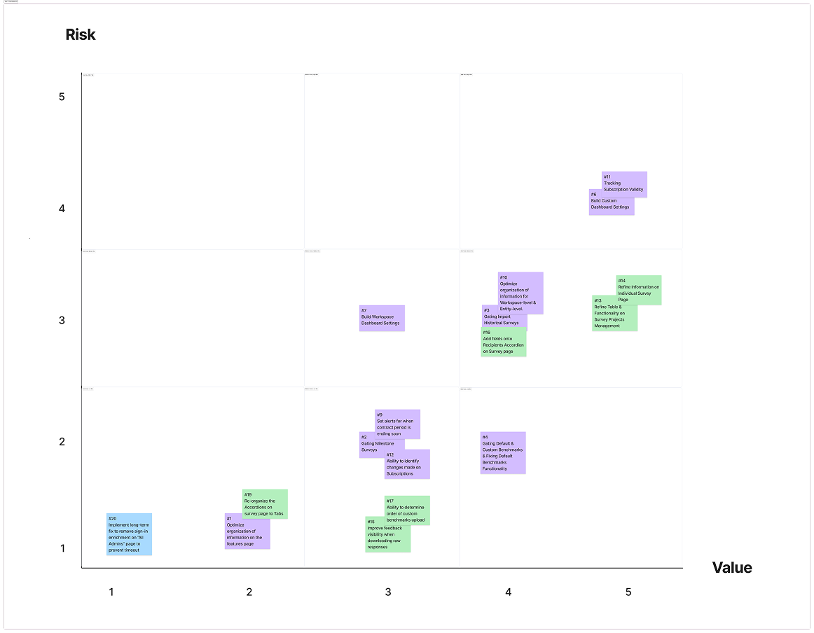

Overview
EngageRocket is a B2B employee experience platform used by HR teams to run company-wide surveys, understand engagement trends, and follow up with actionable insights.
Behind the scenes, multiple internal teams rely on a shared internal tool to configure surveys, manage client data, and support customer-facing workflows.
This internal tool is used by multiple internal teams to manage and support customer-facing workflows. Over time, features were added incrementally, resulting in fragmented experiences and growing friction for day-to-day users.
Problem
How might we better support internal teams by uncovering friction points in their day-to-day workflows and identifying opportunities to simplify, streamline, and scale the internal operations platform?
Role
I was the sole designer and I worked with a product manager in these discovery activities.
November 2025
The internal tool was used by multiple teams with very different responsibilities, including:
Each team relied on the same system but interacted with it in different ways, making alignment and shared understanding critical for the purpose of this discovery exercise.
At the start of the project, the problem space was intentionally broad. The direction from Product was simply to “fix the internal tool,” without a clear definition of what was broken, which users were most affected, or what success should look like. On top of that, the scope spanned multiple teams, workflows, and use cases, making it difficult to know where to focus my effort.

With these constraints in mind, instead of attempting to uncover everything that “needs fixing” about the internal tool, we planned the discovery activities to focus on:
Discovery
Given the tight timeline and limited stakeholder availability, we conducted group interviews instead of ideal 1:1 sessions. This approach was ideal for us to work within the constraints, since group interviews will allow us to:
Over the course of 1–2 weeks, we spoke with Customer Service, Sales, and People Science teams to build a broad understanding of how the tool was used day-to-day. Discovery surfaced a wide range of issues across multiple internal teams, workflows, and use cases.

Synthesis
From all the discovery sessions, I grouped insights into four opportunity areas to help the team align, prioritise, and decide what to act on first. This framing helped structure the broad problems into an actionable opportunity space.

To move from insights to action, the four opportunity areas were used as a shared framework during a value vs. risk prioritisation exercise led by Product. Each opportunity was evaluated based on:
This approach helped align stakeholders on what to tackle first, while making trade-offs explicit rather than subjective.

While the project concluded at the prioritisation stage, this discovery work created meaningful impact by:
When requirements are broad and direction is unclear, investing time in synthesis, framing, and prioritisation can unlock more value than jumping straight into solutioning.
Even with tight timelines and limited prep, structured group interviews and thoughtful synthesis can surface meaningful patterns and guide confident decision-making.